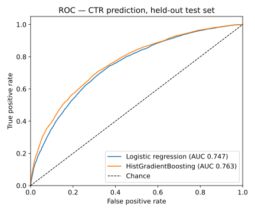
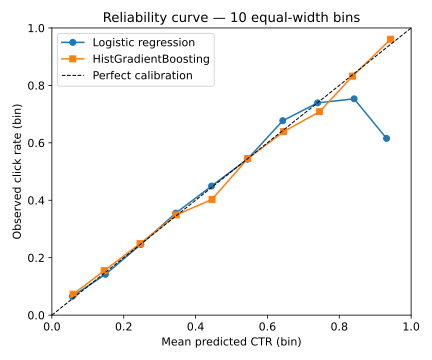
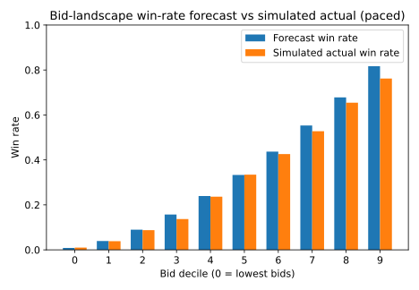
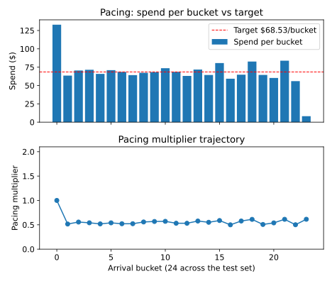
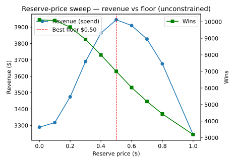

Personal project by Santhosh Chakilam. Data: Criteo Display Advertising
Challenge 100k-row sample (Microsoft Recommenders dac_sample).
100000 rows loaded (CTR 0.2266); train 80000 /
test 20000 stratified random split (seed 42). Value per click
$2.50 (assumed).
| Model | AUC | Log loss | Brier | ECE |
|---|---|---|---|---|
| Logistic regression | 0.7467 | 0.4744 | 0.1538 | 0.0073 |
| HistGradientBoosting | 0.7625 | 0.4610 | 0.1485 | 0.0112 |


Competing-bid landscape: LogNormal(mu=-0.897, sigma=0.894), median competing bid $0.408. The landscape is a parametric model calibrated to our own value-based bids — there is no bid column in the Criteo sample, so this is NOT validated against real auction logs.
| Run | Spend | Budget | Wins | Pred win rate | Actual win rate | Abs error | Decile MAE |
|---|---|---|---|---|---|---|---|
| Unconstrained | $3289.26 | — | 10116 | 0.509 | 0.506 | 0.0037 | 0.0081 |
| Paced (budget $1644.63) | $1644.34 | $1644.63 | 6428 | 0.335 | 0.321 | 0.0138 | 0.0144 |
| Brand-safe paced | $1644.07 | $1644.63 | 6347 | 0.344 | 0.317 | 0.0263 | 0.0264 |
| Ad-load-capped paced (cap 292/bucket) | $1644.31 | $1644.63 | 6400 | 0.344 | 0.320 | 0.0235 | 0.0239 |
Brand safety blocked 795 impressions (synthetic categories: political, firearms, tobacco). The ad-load cap suppressed 237 would-be wins.


| Floor ($) | Revenue ($) | Wins | Avg clearing price ($) |
|---|---|---|---|
| 0.00 | 3289.26 | 10116 | 0.325 |
| 0.10 | 3317.05 | 10075 | 0.329 |
| 0.20 | 3474.28 | 9677 | 0.359 |
| 0.30 | 3689.80 | 8931 | 0.413 |
| 0.40 | 3863.08 | 7997 | 0.483 |
| 0.50 | 3944.56 | 7006 | 0.563 |
| 0.60 | 3909.50 | 6028 | 0.649 |
| 0.70 | 3826.90 | 5189 | 0.738 |
| 0.80 | 3675.82 | 4434 | 0.829 |
| 1.00 | 3244.16 | 3191 | 1.017 |
Best floor $0.50 at revenue $3944.56 vs $3289.26 with no floor.
